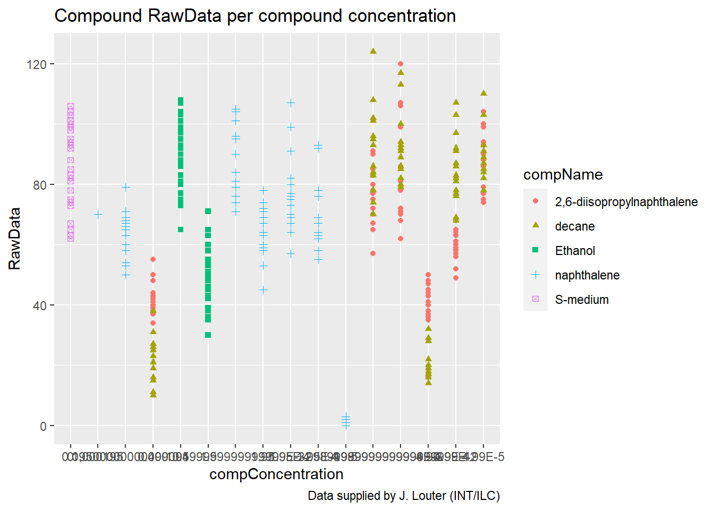
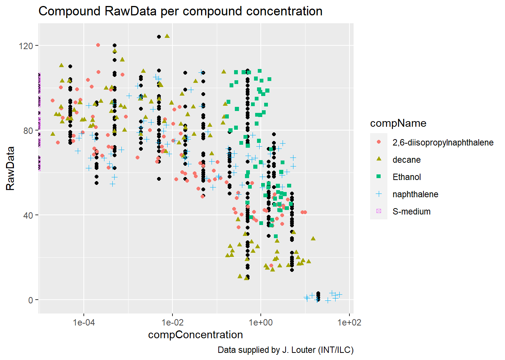

R portfolio Daniël Roodzant
23-4-2021
1
Assignment
C. elegans plate experiment
(Again: work out this exercise in a Rmarkdown file in your portfolio-project. You will need this later to put in your portfolio)
The data for this exercise was kindly supplied by J. Louter (INT/ILC) and was derived from an experiment in which adult C.elegans nematodes were exposed to varying concentrations of different compounds. The variables RawData (the outcome - number of offspring counted as an integer value, after incubation time), compName (the generic name of the compound/chemical), the compConcentration (the concentration of the compound), and the expType are the most important variables in this dataset.
A typical analysis with this data would be to run a dose-response analysis using a log-logistic model with estimates for the maximal, the minimal, the IC50 concentration and the slope at IC50. We will not go into the details but a good package to run such computations and create graphs in R is the {drc} package. See: and:. In the exercise below we will create some visualizations using {ggplot2}.
A. Review the following Excel file in the ./data/CE.LIQ.FLOW.062_Tidydata.xlsx (it’s here), by opening the file in Excel. See if you can spot anything peculiar about this file. Do not edit the file in any way. Just close it when you are done. (Annoyingly, Excel asks you to save your changes, even if you did not touch anything in the file: why is this cumbersome?)
B. Open the file in R, using the {readxl} package.
C. Inspect the data types of columns RawData, compName and compConcentration. What types would you expect from the experimental description above. Have the data types been correctly assigned during the importing of the data into R?
D. Create a graph displaying a scatterplot for the CE.LIQ.FLOW.062_Tidydata.xlsx data, for the different compounds and the varying concentrations. Put the compConcentration on the x-axis, the DataRaw counts on the y-axis and assign a colour to each level in compName. Assign a different symbol (shape =) to each level in the expType variable. Try fixing the labels of the x-axis so that we can read them.
E. When creating the plot under C), what happened with the ordering of the x-axis labels. Explain why this happens. Look at the data-type of the compConcentration column in the data again to find a clue.
F. Correct the data-type of compConcentration to numeric and than look at the graph again. Use a log10 transformation on the x-axis to get a clear graph. Also, add a bit of jitter to the points in the graph so that points are not overlapping.
G & H. Fill in: (G) The positive control for this experiments is ….. (H) The negative control for this experiment is …..
I. Think about how you would analyze this experiment to learn whether there is indeed an effect of different concentrations on offspring count and whether the different compounds have a different curve (IC50). Write down you analysis as a step-wise plan.
J. Normalize the data for the controlNegative in such a way that the mean value for controlNegative is exactly equal to 1 and that all other values are expressed as a fraction thereof. Rerun your graphs with the normalized data.
K. Why would you want to take the step under J?
A
Q: Review the following Excel file in the ./data/CE.LIQ.FLOW.062_Tidydata.xlsx (it’s here), by opening the file in Excel. See if you can spot anything peculiar about this file. Do not edit the file in any way. Just close it when you are done. (Annoyingly, Excel asks you to save your changes, even if you did not touch anything in the file: why is this cumbersome?)
A: Someone put a lot of care into the make-up of the sheet and it’s still difficult to read.
1.1 B
Open the file in R, using the {readxl} package.
| plateRow | plateColumn | vialNr | dropCode | expType | expReplicate | expName | expDate | expResearcher | expTime | expUnit | expVolumeCounted | RawData | compCASRN | compName | compConcentration | compUnit | compDelivery | compVehicle | elegansStrain | elegansInput | bacterialStrain | bacterialTreatment | bacterialOD600 | bacterialConcX | bacterialVolume | bacterialVolUnit | incubationVial | incubationVolume | incubationUnit | incubationMethod | incubationRPM | bubble | incubateTemperature |
|---|---|---|---|---|---|---|---|---|---|---|---|---|---|---|---|---|---|---|---|---|---|---|---|---|---|---|---|---|---|---|---|---|---|
| NA | NA | 1 | a | experiment | 3 | CE.LIQ.FLOW.062 | 2020-11-30 | Sergio Reijnders - Ellis Herder | 68 | hour | 50 | 44 | 24157-81-1 | 2,6-diisopropylnaphthalene | 4.99 | nM | Liquid | controlVehicleA | N2 | 25 | OP50 | heated | 0.743 | 8 | 300 | ul | 1,5 glass vial | 1000 | ul | rockroll | 35 | NA | 20 |
| NA | NA | 1 | b | experiment | 3 | CE.LIQ.FLOW.062 | 2020-11-30 | Sergio Reijnders - Ellis Herder | 68 | hour | 50 | 37 | 24157-81-1 | 2,6-diisopropylnaphthalene | 4.99 | nM | Liquid | controlVehicleA | N2 | 25 | OP50 | heated | 0.743 | 8 | 300 | ul | 1,5 glass vial | 1000 | ul | rockroll | 35 | NA | 20 |
| NA | NA | 1 | c | experiment | 3 | CE.LIQ.FLOW.062 | 2020-11-30 | Sergio Reijnders - Ellis Herder | 68 | hour | 50 | 45 | 24157-81-1 | 2,6-diisopropylnaphthalene | 4.99 | nM | Liquid | controlVehicleA | N2 | 25 | OP50 | heated | 0.743 | 8 | 300 | ul | 1,5 glass vial | 1000 | ul | rockroll | 35 | NA | 20 |
| NA | NA | 1 | d | experiment | 3 | CE.LIQ.FLOW.062 | 2020-11-30 | Sergio Reijnders - Ellis Herder | 68 | hour | 50 | 47 | 24157-81-1 | 2,6-diisopropylnaphthalene | 4.99 | nM | Liquid | controlVehicleA | N2 | 25 | OP50 | heated | 0.743 | 8 | 300 | ul | 1,5 glass vial | 1000 | ul | rockroll | 35 | NA | 20 |
| NA | NA | 1 | e | experiment | 3 | CE.LIQ.FLOW.062 | 2020-11-30 | Sergio Reijnders - Ellis Herder | 68 | hour | 50 | 41 | 24157-81-1 | 2,6-diisopropylnaphthalene | 4.99 | nM | Liquid | controlVehicleA | N2 | 25 | OP50 | heated | 0.743 | 8 | 300 | ul | 1,5 glass vial | 1000 | ul | rockroll | 35 | NA | 20 |
| NA | NA | 2 | a | experiment | 3 | CE.LIQ.FLOW.062 | 2020-11-30 | Sergio Reijnders - Ellis Herder | 68 | hour | 50 | 35 | 24157-81-1 | 2,6-diisopropylnaphthalene | 4.99 | nM | Liquid | controlVehicleA | N2 | 25 | OP50 | heated | 0.743 | 8 | 300 | ul | 1,5 glass vial | 1000 | ul | rockroll | 35 | NA | 20 |
| NA | NA | 2 | b | experiment | 3 | CE.LIQ.FLOW.062 | 2020-11-30 | Sergio Reijnders - Ellis Herder | 68 | hour | 50 | 41 | 24157-81-1 | 2,6-diisopropylnaphthalene | 4.99 | nM | Liquid | controlVehicleA | N2 | 25 | OP50 | heated | 0.743 | 8 | 300 | ul | 1,5 glass vial | 1000 | ul | rockroll | 35 | NA | 20 |
| NA | NA | 2 | c | experiment | 3 | CE.LIQ.FLOW.062 | 2020-11-30 | Sergio Reijnders - Ellis Herder | 68 | hour | 50 | 36 | 24157-81-1 | 2,6-diisopropylnaphthalene | 4.99 | nM | Liquid | controlVehicleA | N2 | 25 | OP50 | heated | 0.743 | 8 | 300 | ul | 1,5 glass vial | 1000 | ul | rockroll | 35 | NA | 20 |
| NA | NA | 2 | d | experiment | 3 | CE.LIQ.FLOW.062 | 2020-11-30 | Sergio Reijnders - Ellis Herder | 68 | hour | 50 | 40 | 24157-81-1 | 2,6-diisopropylnaphthalene | 4.99 | nM | Liquid | controlVehicleA | N2 | 25 | OP50 | heated | 0.743 | 8 | 300 | ul | 1,5 glass vial | 1000 | ul | rockroll | 35 | NA | 20 |
| NA | NA | 2 | e | experiment | 3 | CE.LIQ.FLOW.062 | 2020-11-30 | Sergio Reijnders - Ellis Herder | 68 | hour | 50 | 38 | 24157-81-1 | 2,6-diisopropylnaphthalene | 4.99 | nM | Liquid | controlVehicleA | N2 | 25 | OP50 | heated | 0.743 | 8 | 300 | ul | 1,5 glass vial | 1000 | ul | rockroll | 35 | NA | 20 |
1.2 C
Q: Inspect the data types of columns RawData, compName and compConcentration. What types would you expect from the experimental description above. Have the data types been correctly assigned during the importing of the data into R?
A: You would expect compConcentration to be dbl but it’s in chr so it was imported incorrectly.
1.3 D
Create a graph displaying a scatterplot for the CE.LIQ.FLOW.062_Tidydata.xlsx data, for the different compounds and the varying concentrations. Put the compConcentration on the x-axis, the DataRaw counts on the y-axis and assign a colour to each level in compName. Assign a different symbol (shape =) to each level in the expType variable. Try fixing the labels of the x-axis so that we can read them.
scatter_FLOW.062 <- read_tsv('data/data_raw/CE.LIQ.FLOW.062_Tidydata.txt', locale = locale(decimal_mark = ","))
scatter_FLOW.062 %>% ggplot(aes(x = compConcentration, y = RawData)) +
geom_point(aes(colour = compName, shape = compName)) +
labs(title = "Compound RawData per compound concentration",
caption = "Data supplied by J. Louter (INT/ILC)") 
1.4 E
Q: When creating the plot under C), what happened with the ordering of the x-axis labels. Explain why this happens. Look at the data-type of the compConcentration column in the data again to find a clue.
fout_scatter_FLOW.062 <- read_excel('data/data_raw/CE.LIQ.FLOW.062_Tidydata.xlsx')
fout_scatter_FLOW.062 %>% ggplot(aes(x = compConcentration, y = RawData)) +
geom_point(aes(colour = compName, shape = compName)) +
labs(title = "Compound RawData per compound concentration",
caption = "Data supplied by J. Louter (INT/ILC)") 
A: Every concentration is seen as a separate point because the column has the ‘chr’ type.
1.5 F
Correct the data-type of compConcentration to numeric and than look at the graph again. Use a log10 transformation on the x-axis to get a clear graph. Also, add a bit of jitter to the points in the graph so that points are not overlapping.
scatter_FLOW.062 <- read_tsv('data/data_raw/CE.LIQ.FLOW.062_Tidydata.txt', locale = locale(decimal_mark = ","))
scatter_FLOW.062 %>% ggplot(aes(x = compConcentration, y = RawData)) +
geom_point() +
geom_jitter(aes(colour = compName, shape = compName), width = 0.5) +
scale_x_log10() +
labs(title = "Compound RawData per compound concentration",
caption = "Data supplied by J. Louter (INT/ILC)") 
1.6 G & H
Fill in: (G) The positive control for this experiments is naphtalene (H) The negative control for this experiment is S-medium
1.7 I
Q: Think about how you would analyze this experiment to learn whether there is indeed an effect of different concentrations on offspring count and whether the different compounds have a different curve (IC50). Write down you analysis as a step-wise plan.
A: - Group the data for every compound. - Check if the data is normally distributed. - Use the apropriate statistical tests on the data to see if there is a statistically significant effect of different concentrations on the offspring count. - Calculate the IC50 and make a curve.
1.8 J
mean_data_FLOW.062 <- scatter_FLOW.062 %>%
select(RawData, compName, compConcentration) %>%
group_by(compName) %>%
filter(compName == 'S-medium') %>%
summarise(mean_RawData = mean(RawData, na.rm = TRUE))
normalized_FLOW.062 <- scatter_FLOW.062 %>%
select(compName, compConcentration, RawData) %>%
mutate(RawData_normalized = RawData / mean_data_FLOW.062$mean_RawData)
mean_normalized_FLOW.062 <- normalized_FLOW.062 %>% group_by(compName, compConcentration) %>%
summarise(mean_RawData_normalized = mean(RawData_normalized, na.rm = TRUE))
mean_normalized_FLOW.062 ## # A tibble: 21 x 3
## # Groups: compName [5]
## compName compConcentration mean_RawData_normalized
## <chr> <dbl> <dbl>
## 1 2,6-diisopropylnaphthalene 0.0000499 1.04
## 2 2,6-diisopropylnaphthalene 0.000499 0.967
## 3 2,6-diisopropylnaphthalene 0.00499 0.875
## 4 2,6-diisopropylnaphthalene 0.0499 0.687
## 5 2,6-diisopropylnaphthalene 0.499 0.504
## 6 2,6-diisopropylnaphthalene 4.99 0.470
## 7 decane 0.0000499 1.05
## 8 decane 0.000499 1.08
## 9 decane 0.00499 1.07
## 10 decane 0.0499 0.991
## # … with 11 more rowsmean_normalized_FLOW.062 %>% ggplot(aes(x = compConcentration, y = mean_RawData_normalized)) +
geom_point() +
geom_jitter(aes(colour = compName, shape = compName), width = 0.5) +
labs(title = "Normalized mean compound RawData per compound concentration",
caption = "Data supplied by J. Louter (INT/ILC)")  ## K
To get the result in relation to the ‘0 value’ which makes it easier to compare the samples to the “normal” value.
## K
To get the result in relation to the ‘0 value’ which makes it easier to compare the samples to the “normal” value.